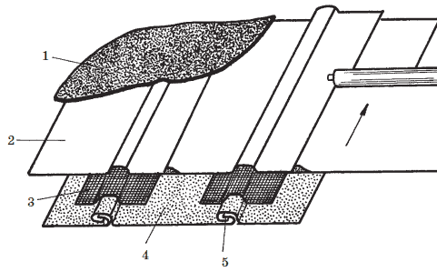

Ремонт стальной кровли.

При эксплуатации стальной кровли ежегодно нужно производить, так называемый, текущий ремонт, который заключается в частичной замене кровли на отдельных участках, площадь которых не превышает 10 % всей площади крыши. Под текущим ремонтом подразумевается установка заплат, заделка трещин, окраска крыши и замена поврежденных участков кровли. Более всего подвержены коррозии разжелобки и надстенные желоба, так как они имеют наименьший уклон.
Перед ремонтом кровлю необходимо тщательно подготовить. Для этого сначала очищают кровлю от пыли, загрязнений и ржавых мест сначала жесткой, затем мягкой метлой или щеткой. Ржавые места очищают стальными щетками, сметают пыль и тут же закрашивают. После этого кровлю осматривают для обнаружения трещин и пробитых мест, которые часто появляются во время чистки снега лопатами. Делать это лучше всего в солнечный день, когда даже мелкие отверстия будут хорошо заметны. Осмотр производят два человека – один с чердака (с длинной палкой), а второй на крыше – с куском мела. Обнаружив отверстие, человек с чердака обозначает место отверстия стуком палки. Его напарник на крыше, найдя отверстие, обводит вокруг него мелом круг. Только завершив осмотр и выявив все дефекты, приступают к их ликвидации. При ремонте стальной кровли в отдельных местах применяют заплаты двух типов: по ширине картины, когда листы кровли износились на плоскости, и промежуточные – при повреждениях в гребнях или около них. Для устройства заплаты заготавливают лист с некоторыми припусками на размеры изношенных мест. Припуски используют для соединений. Поврежденное место раскрывают, на это место укладывают лист (заплату), соединяя его со старым листом стоячими и лежачими фальцами. Заплаты соединяются двойным лежачим фальцем в ендовах и настенных желобах. На особо пологих скатах заплаты соединяются со старыми листами припайкой швов. Перед тем как установить заплаты, их необходимо проолифить, а после окончательного соединения со старыми листами закрасить атмосферостойкими красочными составами, одновременно закрасив и места соединений для предотвращения коррозии.
Внимание!
Если ремонт стальной кровли производят отдельными заплатами, то заплаты нарезают из брезента, плотной мешковины или ткани для отверстий от 30 до 200 мм. Отверстия размером до 30 мм ремонтируют без заплат, их замазывают суриковой замазкой, горячим битумом или кровельной мастикой. При этом кровельный лист на 30–40 мм вокруг отверстия предварительно очищается от грязи, ржавчины и дважды промазывается со стороны крыши и чердака.
Если заплаты делают из мешковины или ткани, то готовят жидкую масляную краску из тертого железного или свинцового сурика на натуральной олифе, хорошо пропитывают ею нарезанные заплаты, выдерживая их в краске 10–15 минут. При опускании в краску заплаты должны быть совершенно сухими. Вынув из краски их отжимают от лишней краски, накладывают на ремонтируемые места, тщательно приглаживая жесткой кистью или руками. Особенно тщательно приглаживаются края. Через 5–7 суток наклеенные заплаты просохнут и можно приступать к окраске. Красить нужно в сухую погоду. Если до окрашивания кровля успела запылиться, то ее обметают мягкой щеткой.
На заметку
Ремонт желобов, карнизных свесов, лотков и водосточных труб выполняются чаще, чем самой кровли, так как эти элементы часто подвергаются механическим воздействиям при неаккуратном сбрасывании снега и скалывании льда, на этих частях кровли влага задерживается дольше.
Если половина площади кровли пришла в негодность, то всю кровлю заменяют новыми листами.
При частичной замене стальной кровли работы по заготовке и укладке картин выполняют так же, как и при устройстве новых стальных кровель. Хорошо сохранившиеся старые листы, снятые с крыши, используют вторично для рядового покрытия на южном скате. Их предварительно очищают, обрезают по периметру, олифят и окрашивают. Использовать их для ответственных частей крыши, таких, как ендовы, карнизные свесы и т. п. не рекомендуется. Для них должна применяться только новая листовая сталь. Все фальцы, и стоячие, и лежачие до их обжатия тщательно промазывают замазкой на железном сурике.
В целях экономии стали кровли с большой степенью износа можно ремонтировать рулонными материалами. Перед началом работ устраняют дефекты в обрешетке, затем ремонтируют желоба, спуски и водосточные устройства. Прикрепляют оторванные участки кровли и вспученные места гвоздями, а поверхность кровли очищают от мусора и ржавчины металлическими щетками. Полотна рулонных материалов настилают вдоль и поперек стоячих фальцев кровли. При покрытии вдоль стоячих фальцев с двух сторон прибивают рейки треугольного сечения и одинаковой высоты с фальцем. Затем поверхность кровли и брусков покрывают горячим битумом, по которому наклеивают полотнища рубероида. Работы ведут от карниза к коньку так, чтобы каждый последующий ряд перекрывал ранее уложенный на 8 см. При покрытии поперечными полосами стоячие фальцы могут быть отогнуты к плоскости кровли.
Есть еще один способ капитального ремонта стальной кровли – это применение полимерной рулонно-наливной композиции «Поликров» без удаления старого покрытия. «Поликров» – это попытка соединить полимерные и наливные материалы в одну композицию. «Поликров» состоит из рулонной основы, армированной стеклотканью («Поликрова-АР»), который приклеивается к основанию при помощи мастики («Поликрова-М») и сверху покрывается несколькими слоями наливного покрытия («Поликрова-Л»). Благодаря рулонной основе «Поликров» легко укладывается на основание и быстро приклеивается к нему. А верхние наливные слои создают бесшовную пленку, облагораживающую внешний вид кровли. Полимерная композиция «Поликров» имеет широкую цветовую гамму, однако лучше отдать предпочтение материалу серебристого цвета, так как он хорошо отражает свет и долго создает ощущение чистоты кровли. Все мастичные материалы композиции («Поликров-М» и «Поликров-Л») являются однокомпонетными.
Совет
Обычно при эксплуатации здания стареет лишь внешний мастичный слой «Поликрова», непосредственно подверженный воздействию УФ-лучей, озона и атмосферных осадков. Рулонное же основание не подвергается негативным влияниям. Поэтому при ремонте кровли, выполненной из «Поликрова», достаточно обновить наливной слой («Поликров-Л»).
При ремонте «Поликровом» стальной кровли кроме того, что стальные листы не нужно удалять, имеется еще ряд достоинств:
• новая кровля из полимерной композиции по многим параметрам будет превосходить старую, металлическую;
• «Поликров» лишь незначительно увеличивает вес кровли;
• при ремонте многощипцовых кровель со сложной геометрией почти не остается отходов кроя, так как обрезки покрытия можно использовать для изоляции мест примыкания и стыков.
Технология ремонта металлической кровли полимерной композицией «Поликров» следующая (рис. 81):

Рис. 81. Ремонт старой металлической кровли полимерной композицией «Поликров»: 1 – защитный лак «Поликров-Л»; 2 – рулонное покрытие «Поликров-АР»; 3 – полоски плотной ткани; 4 – старая металлическая кровля; 5 – фальц
• стоячие фальцы 5 старой металлической кровли плотно пригибаются к поверхности ската;
• металлическая поверхность очищается от мусора;
• поверх загнутых фальцев мастикой «Поликров-М-140» приклеиваются полосы 3 мешковины или стеклоткани шириной 15–20 см;
• устраивается новое изоляционное покрытие из рулонного материала 2 «Поликров-АР-130» или «Поликров-АР-150». Если длина ската кровли не превышает длину стандартного рулона (20–22 м), то покрытие можно выполнить одним сплошным полотном по направлению от конька к карнизному свесу. При работе на больших поверхностях рулонный материал следует приклеивать снизу вверх в направлении основного тока воды (в направлении отгиба фальцев);
• конек крыши проклеивается дополнительной полосой «Поликрова-АР-130» или «Поликрова-АР-150»;
• вся крыша порывается защитным однокомпонентным лаком «Поликров-Л-1».
«Поликров» можно применять во многих регионах страны, так как диапазон выдерживаемых им температур велик – от -60 до +140 °C.
«Поликров» выпускается в виде рулонов по 20 м при ширине 90 см и толщине 2 мм. Масса 1 м равна 2,5 кг. Мастики поставляются в бочках (до 200 л) или в бидонах (по 20 л).
Срок службы полимерной композиции составляет 25 лет. При этом затраты на устройство и содержание в сравнении с другими типами кровли составляют:
• битумная кровля за 6 лет – 105 руб/м ;
• битумно-полимерная кровля за 12 лет – 150 руб/м ;
• кровля из «Поликрова» за 21 год – 130 руб/м .
Листовой материал покрытия кровли особенно сильно подвергается коррозии в местах соединений или между брусками обрешетки со стороны чердака, когда в нем нарушается температурно-влажностный режим.
На заметку
Соединительные детали (гвозди, болты, проволока) выполняются из неоцинкованной стали и в местах их соединения с оцинкованными листами кровельной стали образуется электропара, действующая разрушающе на оцинкованную сталь. В этом случае рекомендуется делать прокладку из одного или двух слоев рубероида. Такое же явление наблюдается при применении неоцинкованных ухватов при установке оцинкованных водосточных труб.
Ремонт водосточных труб может заключаться в частичной замене отдельных звеньев, колен, воронок или в полной их замене. При смене отдельных прямых звеньев труб и колен следует сначала опустить на 8-10 см нижнюю часть ствола трубы, предварительно освободив его от затяжки и стремени. Затем заменяемая деталь удаляется, ставится новая, ее крепят за верхний конец в стремени, а затем нижнюю часть трубы поднимают и соединяют с новой. При полной смене водосточной трубы монтаж начинают снизу.
При окраске отремонтированной кровли работы ведут большими маховыми кистями по совершенно чистому и сухому основанию. Нанесенная краска предохраняет кровлю от быстрого разрушения. Качество любой краски зависит от соблюдения технологических требований при выполнении работ.
Быстрый износ красочной пленки на кровле происходит от совместного воздействия на нее воздуха, воды, углекислоты, сероводорода, пыли, песка и дыма. Так, углекислота воздуха, соединяясь с влагой, ускоряет разрушение красочного слоя. Сероводород в большинстве случаев обесцвечивает некоторые краски и отрицательно влияет на красочный слой. Пыль и песок, под воздействием ветра со временем истирает красочную пленку. Дым в основном загрязняет окрашенные поверхности.
Поверхности кровли должны быть окрашены гладко, чтобы они не задерживали на себе пыль и песок. Образование пузырей на красочном слое происходит от окраски недостаточно сухих поверхностей, плохой очистки их от загрязнений и копоти, нанесения краски на непросохшую грунтовку и шпаклевку. Неравномерность толщины красочного слоя приводит к образованию трещин, так как тонкие слои высыхают быстрее толстых.
Правильно нанесенная масляная краска, приготовленная на хорошей олифе, имеет после высыхания блестящую поверхность. По мере разрушения краски блеск ее постепенно теряется, она начинает давать трещины и отстает от основания. Кроме того, стальная кровля, нагреваясь от солнечных лучей, расширяется и разрывает устаревший красочный слой, который потерял эластичность. Таких образом, на красочной пленке образуется множество мелких трещин. В трещины попадает вода, сталь начинает ржаветь, и требуется новая окраска.
Совет
Правильное и прочное окрашивание кровли производится за три, минимум за два раза. Перед окраской кровлю необходимо тщательно подготовить, как это описано в начале данного раздела.
При окрашивании кровли в первый раз краска должна быть жиже, чем для последующих окрасок. Поэтому для первой окраски на 1 кг густотертой краски берут 0,6–0,7 кг олифы. Жидкая краска лучше проникает во все поры кровли. Для второй и последующих окрасок на 1 кг густотертой краски берут 0,4–0,5 кг олифы. Для окрашивания 1 м кровли за один раз требуется в среднем: охры – 180–200 г, мумии – 70–90 г, сурика железного – 35–40 г, медянки – 250–280 г.
Через 5–7 суток после первой окраски кровлю окрашивают второй раз, после чего через 8-10 суток красят третий раз. Масляная краска полностью высыхает в среднем лишь через 10 дней. Соблюдение соответствующего режима просыхания краски повышает качество работы. Существующая практика окраски за второй раз через 1–2 суток после первой не обеспечивает высокого качества.
Совет
При окрашивании краска растушевывается вдоль ската. Прежде всего необходимо окрасить спуск кровли, а затем вести работу от конька к спускам. Краску следует набирать на кисть в небольших количествах и растушевывать ее тонким слоем без грубых полос и потеков. Толстые слои краски со временем потрескаются, в трещинах будет задерживаться вода, разрушая кровлю.
Работать на кровле следует в валенках или в обычной обуви, но с привязанными войлочными подошвами, которые не скользят по стали и не разрушают свежий красочный слой.